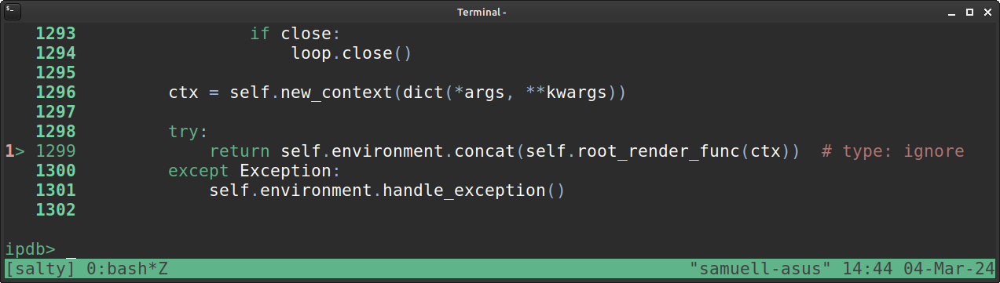
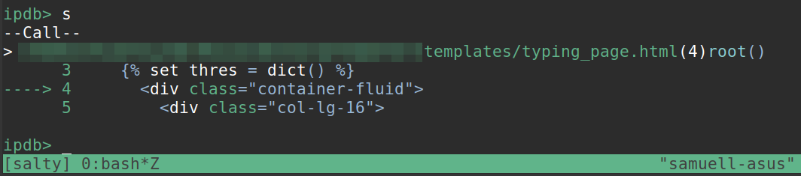
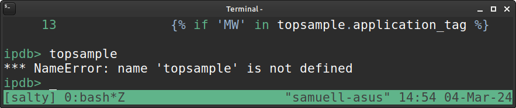
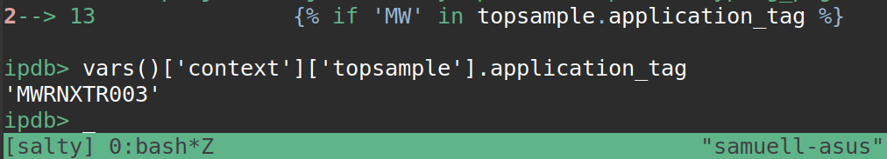

Debugging inside Jinja templates using pdb/ipdb
I’m working on a static reporting tool using the Jinja2 templating engine for Python.
I was trying to figure out a way to enter into the Jinja templating code with the pdb/ipdb commandline debugger.
I tried creating an .ipdbrc file in my local directory with the line:
path/to/template.html:<lineno>
… but that didn’t work.
What worked was to figure out the line that says :
return self.environment.concat(self.root_render_func(ctx))
… inside the the jinja codebase, and put a breakpoint on that (which for me was on line 1299, but might vary depending on version):
break <path-to-python-install>/lib/python3.11/site-packages/jinja2/environment.py:1299
Now, when I start my script, I stop at this breakpoint:

Typed ’s’ to step into that function … and lo and behold, I’m inside the template page(!):

You can’t access variables in the normal way though:

… but with some digging, I found you can do it in another way, by
accessing them via vars()['context']['<variable-name-here>']
